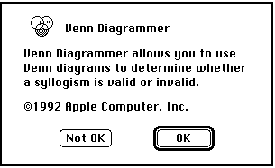
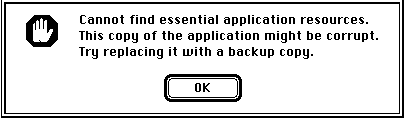

About Dialog Boxes
A dialog box is a window that's used for some special, limited purpose. In the simplest case, you can use a dialog box just to display information to the user. The information might be a report of some error, a greeting, or a progress bar showing what percentage of some operation has completed. Figure 7-1 shows a simple modal dialog box of this ilk; this is the box Venn Diagrammer displays when the user chooses the About Venn Diagrammer command from the Apple menu.
This kind of dialog box is said to be modal: it puts the user in the state or "mode" of being able to work only inside the dialog box. To dismiss the dialog box, the user must click one or the other of the two buttons.
The system software distinguishes a special category of modal dialog boxes, called alert boxes. You'll use alert boxes to report errors or to give warnings to the user. Figure 7-2 shows an alert box. (Venn Diagrammer displays this alert box if it cannot read the resources it uses to create menus; see Listing 8-1 on page 155.)

Other types of dialog boxes both display information to the user and allow the user to enter or change information. You might, for instance, use a dialog box of this sort in an application that allows users to specify a word to be searched for. The Venn Diagrammer application displays the modeless dialog shown in Figure 7-3 when the user chooses the Preferences command from the Venn menu.
Figure 7-3 A Preferences dialog box
This modeless dialog box contains a button, four checkboxes, and eight radio buttons. It also contains eight application-defined items--the icons used to show the available existence symbols and emptiness patterns.
In contrast to the modal dialog boxes shown in Figure 7-1 and Figure 7-2, the dialog box shown in Figure 7-3 is said to be modeless: the user can switch to another window or perform other actions without dismissing the dialog box. The user doesn't have to change any preferences settings or click any buttons to be able to switch to a document window or pull down a menu. Moreover, clicking a button in the modeless dialog box should not dismiss it; instead, the dialog box should remain on the desktop so that the user can continue to see the information displayed in it or repeat any actions it permits.
The distinctive feature of dialog boxes--as opposed to windows--is that they are very easy to create and manage. The Dialog Manager looks in dialog resources to find descriptions of the dialog box and the items in it. Then the Dialog Manager draws the dialog box and handles user actions in the dialog box accordingly. This can be especially useful for managing dialog boxes that contain editable text fields. The Dialog Manager calls TextEdit to handle all the standard text-editing operations such as cutting, pasting, and copying.
- IMPORTANT
- To give users maximum control and minimum frustration, you should, whenever possible, implement your dialog boxes as modeless dialog boxes.

To create a dialog box, you first need to define a dialog resource and a dialog item list. The dialog resource specifies, among other things, the rectangle on the screen in which the dialog box is drawn, a window definition ID indicating the type of dialog box to draw, and a resource ID of the dialog item list. A dialog resource is of type
'DLOG'. See Figure 3-2 on page 58 for the ResEdit form of a dialog resource and Listing 3-1 on page 57 for the Rez form of the same dialog resource. Both of these correspond to the dialog box in Figure 7-3.One of the main pieces of information in a dialog resource is the resource ID of a dialog item list (a resource of type
'DITL'). The item list specifies the items--such as buttons and static text--to display in an alert box or a dialog box. (Once again, you can specify an item list graphically using a utility like ResEdit or textually in the Rez resource description language.) The Dialog Manager uses the item list both to draw the dialog box and also to handle user actions in dialog boxes. It reports user actions to your application by specifying the item number of the relevant item. An item's number is simply its rank in the item list. In Listing 7-1, the Venn Diagrammer application defines a number of constants to keep track of the numbers of the items in its Preferences dialog box.Listing 7-1 Dialog item numbers
iEmpty1Radio = 1; iEmpty2Radio = 2; iEmpty3Radio = 3; iEmpty4Radio = 4; iEmpty1Icon = 5; iEmpty2Icon = 6; iEmpty3Icon = 7; iEmpty4Icon = 8; iExist1Radio = 9; iExist2Radio = 10; iExist3Radio = 11; iExist4Radio = 12; iExist1Icon = 13; iExist2Icon = 14; iExist3Icon = 15; iExist4Icon = 16; iGetNextRandomly = 19; iAutoAdjust = 20; iShowSchoolNames = 21; iUseExistImport = 22; iSaveVennPrefs = 23;Dialog boxes can contain various sorts of items, such controls (buttons, checkboxes, and radio buttons) and fields for entering and editing text. The Dialog Manager recognizes these constants for dialog box items:
- Note
- Notice that several item numbers (namely, 17 and 18) are missing from this list. They are the item numbers of the two text labels "Emptiness Pattern" and "Existence Symbol." Venn Diagrammer ignores those item numbers because clicking them has no effect.
CONST ctrlItem = 4; {add this to the next four constants} btnCtrl = 0; {standard button control} chkCtrl = 1; {standard checkbox control} radCtrl = 2; {standard radio button} resCtrl = 3; {control defined in a control resource} helpItem = 1; {help balloons} statText = 8; {static text} editText = 16; {editable text} iconItem = 32; {icon} picItem = 64; {QuickDraw picture} userItem = 0; {application-defined item}Several Dialog Manager routines return these constants to your application. For instance, you can get information about a particular dialog item by calling theGetDialogItemroutine:GetDialogItem(myDialog, itemNum, myType, myHand, myRect);Suppose, for example, thatitemNumhas the value specified by the constantiSaveVennPrefs. Then on return from the procedure call,myTypewill contain the valuectrlItem+btnCtrl, indicating that the specified item is a standard button control.As you can see, a dialog box can contain standard user interface elements like buttons, checkboxes, icons, and even arbitrary pictures. If you need to include other kinds of elements in a dialog box, you can create application-defined items. Because the Dialog Manager uses the constant
userItemto designate these items, they're often called user items. The Venn Diagrammer application employs eight user items in the Preferences dialog box, to draw the four emptiness patterns and the four existence symbols.When you use any application-defined user items in a dialog box, your application needs to tell the Dialog Manager how to draw the items and what to do in response to user selections of those items. See "Setting Up Application-Defined Items" beginning on page 139 for instructions on implementing user items in a dialog box.
- Note
- Most dialog boxes don't need to contain user items. The Venn Diagrammer application uses them because it needs to draw bit images (not entire icons) in the dialog box.